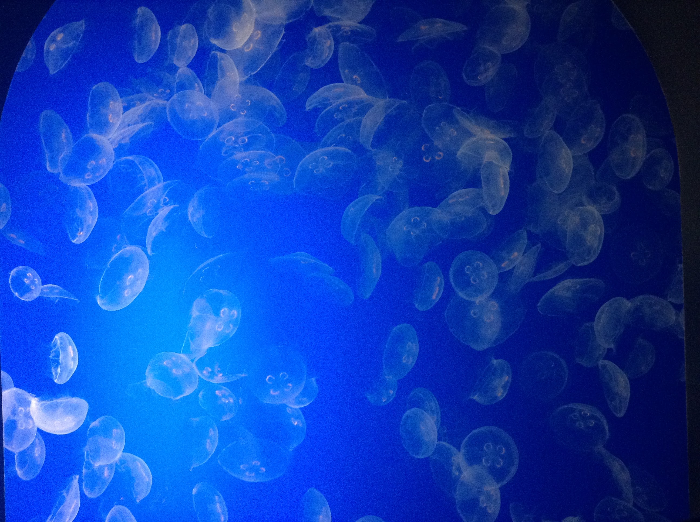

Lab 11: Advanced Block-level Styling I

Purpose:
The purpose of Lab 11 is to work with block-level styling and to be able to experiment with different elements on our CSS pages.
Challenges:
We didn't face any challenges when completing Lab 11, it was just a matter of getting everything organized and ready.
Results:
Displayed in our webpage are the results of Lab 11.